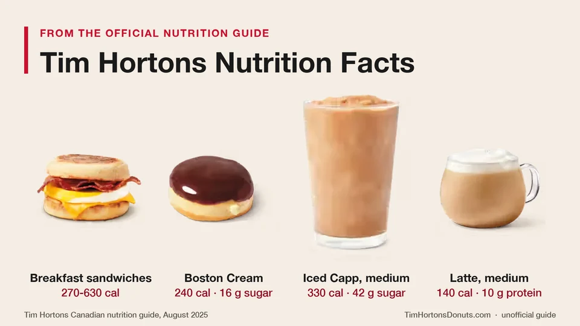

Unofficial fan guide - not affiliated with Tim Hortons
Calories, fat, sodium, sugar and protein for more than 200 Tim Hortons menu items in Canada, taken from the official nutrition guide.
Full Menu / Blog / Tim Hortons Nutrition Facts

Tim Hortons menu items range from 0 calories for a steeped tea to 930 for a Hat Trick Flatbread Pizza. Donuts have 200 to 360 calories, breakfast sandwiches 270 to 630, and a medium Iced Capp 210 to 540. The tables below use Tim Hortons' August 2025 Canadian nutrition guide.
This page lists calories, fat, saturated fat, sodium, carbohydrates, sugar and protein for 209 Tim Hortons menu items in Canada. Drinks are shown in a medium so you can compare them fairly. If you only need calories by size, see our Tim Hortons calories page.
The quickest way to read the menu is by category. Black coffee and tea are close to zero on everything. Baked goods carry the sugar, and lunch items carry the sodium.
| Category | Calories | Sugar | Sodium | Protein |
|---|---|---|---|---|
| Brewed coffee, black (any size) | 3 to 5 | 0 g | 0 mg | 0 g |
| Lattes and cappuccinos (medium) | 120 to 170 | 9 to 13 g | 80 to 115 mg | 8 to 20 g |
| French Vanilla and hot chocolates (medium) | 280 to 330 | 39 to 45 g | 230 to 310 mg | 1 to 3 g |
| Iced coffee, cold brew and iced lattes (medium) | 100 to 230 | 11 to 31 g | 35 to 100 mg | 1 to 17 g |
| Iced Capps and Creamy Chills (medium) | 210 to 560 | 42 to 78 g | 45 to 290 mg | 3 to 4 g |
| Donuts | 200 to 360 | 8 to 28 g | 120 to 280 mg | 2 to 6 g |
| Timbits (each) | 50 to 90 | 3 to 9 g | 25 to 75 mg | 1 g |
| Muffins | 340 to 420 | 20 to 36 g | 400 to 790 mg | 5 to 6 g |
| Bagels (no topping) | 290 to 330 | 4 to 14 g | 360 to 710 mg | 9 to 11 g |
| Breakfast sandwiches | 270 to 630 | 2 to 12 g | 500 to 1,290 mg | 13 to 26 g |
| Breakfast wraps | 400 to 700 | 3 to 4 g | 720 to 1,160 mg | 18 to 25 g |
| Lunch sandwiches, wraps and melts | 380 to 620 | 1 to 10 g | 660 to 1,730 mg | 16 to 36 g |
| Loaded Wraps and Loaded Bowls | 530 to 710 | 4 to 6 g | 1,060 to 1,500 mg | 12 to 34 g |
| Flatbread Pizzas | 630 to 930 | 5 to 6 g | 1,590 to 2,390 mg | 31 to 48 g |
| Soups and chili (regular) | 100 to 310 | 2 to 7 g | 590 to 910 mg | 5 to 19 g |
Tim Hortons publishes them in an official nutrition guide for Canada. The current guide is dated August 2025 and runs to 17 pages. It lists ten values for each item: calories, fat, saturated fat, trans fat, cholesterol, sodium, carbohydrates, fibre, total sugars and protein.
Tim Hortons says the numbers come from its nutrition software, ESHA Genesis R&D, and from information supplied by its vendors. The guide carries four caveats that are worth knowing:
Every number in the category tables below is copied from that guide. We have not estimated or rounded anything ourselves.
A medium Tim Hortons hot drink has between 0 and 330 calories. Plain brewed coffee and steeped tea have almost none. The calories in the other drinks come from cream, milk, sugar and flavoured mixes.
| Hot drink (medium) | Calories | Fat (g) | Sat. fat (g) | Sodium (mg) | Carbs (g) | Sugar (g) | Protein (g) |
|---|---|---|---|---|---|---|---|
| Brewed coffee, black (Original Blend) | 4 | 0 | 0 | 0 | 0 | 0 | 0 |
| Regular coffee (1 cream, 1 sugar) | 100 | 6 | 4 | 40 | 11 | 11 | 1 |
| Double Double (2 cream, 2 sugar) | 200 | 13 | 8 | 80 | 22 | 21 | 2 |
| Cappuccino | 120 | 4.5 | 3 | 95 | 12 | 11 | 8 |
| Latte | 140 | 5 | 3.5 | 115 | 14 | 13 | 10 |
| Protein Latte | 170 | 6 | 4 | 80 | 10 | 9 | 20 |
| Coffee Mocha | 140 | 2 | 2 | 115 | 31 | 22 | 1 |
| French Vanilla | 330 | 12 | 12 | 230 | 50 | 39 | 3 |
| Hot Chocolate | 280 | 4 | 3.5 | 230 | 62 | 43 | 1 |
| White Hot Chocolate | 330 | 11 | 10 | 310 | 55 | 45 | 1 |
| London Fog | 160 | 3 | 2 | 110 | 28 | 28 | 6 |
| Steeped Tea, plain | 0 | 0 | 0 | 0 | 0 | 0 | 0 |
A medium Double Double has 200 calories and 21 g of sugar. A medium French Vanilla has 330 calories, 39 g of sugar and 12 g of saturated fat. The Protein Latte is the outlier in the other direction, with 20 g of protein in a medium. Our coffee menu page has prices for every size.
A medium Tim Hortons cold drink runs from 100 calories for a Light Iced Coffee to 560 for a Vanilla Creamy Chill. Sugar is the number to watch. Seven of these drinks have more than 70 g in a medium.
| Cold drink (medium) | Calories | Fat (g) | Sat. fat (g) | Sodium (mg) | Carbs (g) | Sugar (g) | Protein (g) |
|---|---|---|---|---|---|---|---|
| Original Iced Coffee | 150 | 8 | 4.5 | 45 | 20 | 19 | 1 |
| Light Iced Coffee | 100 | 1 | 1 | 40 | 21 | 21 | 3 |
| Original Cold Brew | 150 | 8 | 5 | 40 | 22 | 22 | 1 |
| Vanilla Cream Cold Brew | 160 | 7 | 4 | 35 | 22 | 22 | 1 |
| Roasted Hazelnut Cold Brew | 220 | 14 | 10 | 70 | 25 | 22 | 2 |
| Original Iced Latte | 200 | 5 | 3 | 100 | 31 | 31 | 8 |
| Unsweetened Iced Latte | 120 | 5 | 3 | 100 | 11 | 11 | 8 |
| Original Protein Iced Latte | 230 | 5 | 3 | 70 | 28 | 28 | 17 |
| Original Iced Capp | 330 | 16 | 10 | 105 | 45 | 42 | 3 |
| Light Iced Capp | 210 | 2 | 1 | 45 | 45 | 43 | 4 |
| Mocha Iced Capp | 530 | 24 | 17 | 260 | 79 | 72 | 4 |
| Vanilla Iced Capp | 540 | 23 | 17 | 200 | 81 | 76 | 3 |
| Caramel Iced Capp | 530 | 24 | 18 | 230 | 79 | 74 | 4 |
| Chocolate Creamy Chill | 550 | 24 | 17 | 290 | 83 | 74 | 4 |
| Vanilla Creamy Chill | 560 | 23 | 17 | 230 | 86 | 78 | 3 |
| Strawberry Creamy Chill | 550 | 23 | 17 | 170 | 85 | 75 | 3 |
| Frozen Lemonade | 250 | 0 | 0 | 45 | 62 | 56 | 0 |
| Strawberry Frozen Lemonade | 310 | 0 | 0 | 40 | 79 | 71 | 0.1 |
| Classic Lemonade | 110 | 0 | 0 | 10 | 30 | 28 | 0 |
The Light Iced Capp shows why it pays to read past the calories. A medium has 210 calories against 330 for the Original Iced Capp, but the sugar is almost the same: 43 g against 42 g. The saving comes from fat, which falls from 16 g to 2 g.
A medium Quencher has 12 to 76 g of sugar, depending on the type. Sparkling Quenchers are the lightest, Lemonade Quenchers sit in the middle, and Frozen Quenchers are closer to an Iced Capp.
| Quencher flavour (medium) | Sparkling: calories / sugar | Lemonade: calories / sugar | Frozen: calories / sugar |
|---|---|---|---|
| Blackberry Yuzu | 110 / 28 g | 170 / 42 g | 390 / 76 g |
| Orange Tangerine | 120 / 26 g | 180 / 40 g | 400 / 74 g |
| Peach | 70 / 16 g | 130 / 30 g | 350 / 64 g |
| Pineapple Dragon Fruit | 60 / 12 g | 120 / 26 g | 340 / 60 g |
| Strawberry Watermelon | 60 / 12 g | 120 / 26 g | 340 / 60 g |
A Tim Hortons donut has 200 to 360 calories and 8 to 28 g of sugar. Yeast donuts such as the Chocolate Dip and Boston Cream sit at the low end. Cake donuts, crullers and coconut donuts sit at the high end, mostly because they carry more fat.
| Donut | Calories | Fat (g) | Sat. fat (g) | Sodium (mg) | Carbs (g) | Sugar (g) | Protein (g) |
|---|---|---|---|---|---|---|---|
| Apple Fritter | 330 | 11 | 5 | 280 | 54 | 23 | 6 |
| Boston Cream | 240 | 8 | 3.5 | 240 | 38 | 16 | 4 |
| Canadian Maple | 250 | 8 | 3.5 | 240 | 38 | 16 | 4 |
| Chocolate Cruller | 360 | 22 | 11 | 120 | 40 | 28 | 2 |
| Chocolate Dip | 220 | 8 | 3.5 | 190 | 33 | 12 | 4 |
| Chocolate Éclair | 310 | 14 | 9 | 230 | 45 | 20 | 5 |
| Chocolate Glazed | 330 | 21 | 10 | 210 | 34 | 20 | 3 |
| Chocolate Marble | 320 | 21 | 10 | 210 | 31 | 17 | 3 |
| Chocolate Snow | 290 | 21 | 10 | 210 | 24 | 10 | 3 |
| Chocolate Toasted Coconut | 360 | 24 | 14 | 220 | 34 | 19 | 3 |
| Coconut Cream | 260 | 10 | 5 | 240 | 39 | 17 | 4 |
| Double Chocolate | 310 | 21 | 10 | 210 | 28 | 14 | 3 |
| Honey Cruller | 320 | 22 | 11 | 120 | 30 | 18 | 2 |
| Honey Dip | 250 | 7 | 3.5 | 190 | 41 | 21 | 4 |
| Long John | 240 | 9 | 4 | 210 | 36 | 13 | 4 |
| Maple Cruller | 360 | 22 | 11 | 120 | 40 | 28 | 2 |
| Maple Dip | 220 | 7 | 3.5 | 190 | 33 | 12 | 4 |
| Maple Éclair | 310 | 14 | 9 | 230 | 43 | 18 | 5 |
| Maple Swirl | 250 | 8 | 3.5 | 240 | 39 | 17 | 4 |
| Old Fashioned Dip | 310 | 18 | 9 | 230 | 34 | 16 | 3 |
| Old Fashioned Glazed | 330 | 18 | 9 | 230 | 40 | 22 | 3 |
| Old Fashioned Plain | 280 | 18 | 9 | 230 | 26 | 9 | 3 |
| Old Fashioned Snow | 290 | 18 | 9 | 230 | 30 | 12 | 3 |
| Old Fashioned Sugar | 300 | 18 | 9 | 230 | 33 | 16 | 3 |
| Powdered Venetian Cream | 220 | 8 | 4 | 240 | 32 | 10 | 4 |
| Sour Cream Glazed | 340 | 18 | 8 | 180 | 40 | 24 | 3 |
| Sour Cream Plain | 280 | 18 | 8 | 180 | 26 | 11 | 3 |
| Sour Cream Sugar | 300 | 16 | 8 | 180 | 32 | 16 | 3 |
| Strawberry Dip | 220 | 7 | 3.5 | 190 | 33 | 12 | 4 |
| Strawberry Filled | 240 | 8 | 3.5 | 210 | 38 | 16 | 4 |
| Strawberry Swirl | 230 | 7 | 3.5 | 190 | 38 | 17 | 4 |
| Strawberry Vanilla | 270 | 8 | 3.5 | 210 | 49 | 15 | 4 |
| Sugar Loop | 200 | 7 | 3.5 | 190 | 29 | 8 | 4 |
| Toasted Coconut | 360 | 21 | 12 | 240 | 39 | 21 | 4 |
| Vanilla Dip | 250 | 7 | 3.5 | 190 | 40 | 19 | 4 |
The Sugar Loop is the lightest donut, at 200 calories and 8 g of sugar. The Chocolate Cruller and Maple Cruller have the most sugar, at 28 g each. See the donuts menu for prices, or our ranking of the best Tim Hortons donuts.
One Timbit has 50 to 90 calories and 3 to 9 g of sugar. The Honey Dip, Strawberry and Venetian Cream are the lightest at 50 calories each.
| Timbit (1 piece) | Calories | Fat (g) | Sodium (mg) | Carbs (g) | Sugar (g) | Protein (g) |
|---|---|---|---|---|---|---|
| Birthday Cake | 80 | 3 | 60 | 13 | 9 | 1 |
| Chocolate Glazed | 80 | 3.5 | 70 | 11 | 6 | 1 |
| Chocolate Snow Ball | 70 | 3.5 | 70 | 8 | 3 | 1 |
| Chocolate Toasted Coconut | 90 | 4.5 | 75 | 11 | 6 | 1 |
| Honey Dip | 50 | 1.5 | 25 | 8 | 5 | 1 |
| Old Fashioned Glazed | 80 | 3.5 | 64 | 12 | 7 | 1 |
| Old Fashioned Plain | 60 | 3.5 | 65 | 8 | 3 | 1 |
| Old Fashioned Sugar | 70 | 3.5 | 65 | 9 | 4 | 1 |
| Snow Ball | 70 | 3.5 | 65 | 8 | 3 | 1 |
| Sour Cream Glazed | 90 | 5 | 50 | 11 | 7 | 1 |
| Sour Cream Plain | 80 | 5 | 50 | 7 | 3 | 1 |
| Sour Cream Sugar | 80 | 5 | 50 | 8 | 4 | 1 |
| Strawberry | 50 | 1.5 | 30 | 8 | 4 | 1 |
| Toasted Coconut | 90 | 4.5 | 70 | 12 | 6 | 1 |
| Venetian Cream | 50 | 1.5 | 40 | 7 | 3 | 1 |
A 10-pack is where it adds up. Ten Timbits come to 500 to 900 calories, depending on the flavours in the box. The Timbits menu lists pack sizes and prices.
Tim Hortons muffins have 340 to 420 calories, which is more than most donuts. They also carry more sodium than most people expect: 400 to 790 mg each.
| Baked good | Calories | Fat (g) | Sat. fat (g) | Sodium (mg) | Carbs (g) | Sugar (g) | Protein (g) |
|---|---|---|---|---|---|---|---|
| Chocolate Chip Muffin | 420 | 17 | 5 | 400 | 64 | 36 | 6 |
| Fruit Explosion Muffin | 360 | 12 | 2 | 490 | 59 | 30 | 5 |
| Wild Blueberry Muffin | 380 | 14 | 2 | 500 | 56 | 29 | 6 |
| Raisin Bran Muffin | 380 | 13 | 2 | 500 | 60 | 30 | 6 |
| Carrot Cake Walnut Muffin | 360 | 13 | 2.5 | 480 | 55 | 28 | 6 |
| Banana Pecan Muffin | 340 | 10 | 2 | 790 | 60 | 20 | 6 |
| Pumpkin Spice Muffin | 390 | 15 | 3 | 520 | 58 | 31 | 6 |
| Chocolate Chunk Cookie | 310 | 17 | 10 | 260 | 38 | 22 | 3 |
| Oreo Chunk Cookie | 310 | 15 | 8 | 250 | 41 | 21 | 4 |
| Reese's Minis Dream Cookie | 350 | 17 | 9 | 320 | 45 | 31 | 5 |
| Dream Cookie made with M&M Minis | 360 | 18 | 9 | 230 | 47 | 30 | 4 |
| Chocolate Chunk Brookie | 410 | 22 | 12 | 310 | 52 | 32 | 5 |
| Double Chocolate Brownie | 410 | 20 | 8 | 190 | 57 | 39 | 5 |
| Plain Croissant | 260 | 13 | 7 | 240 | 30 | 3 | 6 |
| Cheese Croissant | 290 | 14 | 8 | 280 | 30 | 3 | 7 |
| Chocolate Croissant | 350 | 17 | 8 | 120 | 43 | 18 | 6 |
| Cheese Tea Biscuit | 250 | 11 | 4 | 610 | 31 | 4 | 8 |
| Raisin Tea Biscuit | 250 | 8 | 1.5 | 500 | 40 | 12 | 5 |
| Herb & Garlic Savoury Pastry | 240 | 11 | 6.5 | 470 | 29 | 6 | 6 |
| Four Cheese Savoury Twist | 220 | 14 | 7 | 250 | 21 | 1 | 4 |
| Roasted Red Pepper & Swiss Pinwheel | 280 | 15 | 10 | 350 | 28 | 4 | 8 |
| Spinach & Feta Egg Pastry | 280 | 14 | 8 | 480 | 31 | 5 | 8 |
The Banana Pecan Muffin has the most fibre on the bakery shelf, at 9 g, and the least sugar of the muffins, at 20 g. It also has the most sodium, at 790 mg. The Chocolate Chip Muffin is the heaviest at 420 calories and 36 g of sugar. See the muffins menu and cookies menu for prices.
A Tim Hortons bagel has 290 to 330 calories before you add anything. Bagels are low in fat and sugar but high in carbohydrates, at 57 to 64 g each.
| Bagel or topping | Calories | Fat (g) | Sat. fat (g) | Sodium (mg) | Carbs (g) | Sugar (g) | Protein (g) |
|---|---|---|---|---|---|---|---|
| Plain Bagel | 290 | 1.5 | 0.4 | 380 | 62 | 9 | 9 |
| Sesame Seed Bagel | 310 | 4 | 1 | 400 | 62 | 10 | 10 |
| Everything Bagel | 290 | 2 | 0.5 | 390 | 60 | 9 | 10 |
| 12-Grain Bagel | 320 | 7 | 1 | 460 | 57 | 9 | 11 |
| Cinnamon Raisin Bagel | 290 | 1 | 0.3 | 360 | 64 | 14 | 9 |
| Blueberry Bagel | 310 | 3.5 | 0.5 | 510 | 60 | 7 | 9 |
| Four Cheese Bagel | 330 | 5 | 1.5 | 580 | 58 | 4 | 11 |
| Jalapeño Asiago Mozzarella Bagel | 320 | 4.5 | 1.5 | 710 | 59 | 4 | 11 |
| Plain Cream Cheese (topping) | 100 | 9 | 6 | 150 | 2 | 2 | 2 |
| Herb & Garlic Cream Cheese (topping) | 100 | 9 | 6 | 190 | 3 | 2 | 2 |
| Strawberry Cream Cheese (topping) | 100 | 7 | 5 | 120 | 6 | 6 | 2 |
| Butter (topping) | 60 | 7 | 4.5 | 55 | 0 | 0 | 0 |
| Strawberry Jam Packet (topping) | 60 | 0 | 0 | 0 | 14 | 14 | 0 |
| Raspberry Jam Packet (topping) | 60 | 0 | 0 | 0 | 14 | 14 | 0 |
| Peanut Butter (topping) | 110 | 9 | 1.5 | 75 | 4 | 1 | 3 |
Toppings change the total quickly. Plain cream cheese adds 100 calories and 9 g of fat, and butter adds 60 calories. A 12-Grain Bagel has the most fibre, at 8 g. Prices are on the bagel menu.
Tim Hortons breakfast items run from 120 calories for a Hash Brown to 700 for a Sausage & Bacon Farmer's Wrap. Sausage adds about 120 calories over bacon on the same sandwich, and a bagel adds about 150 over an English muffin.
| Breakfast item | Calories | Fat (g) | Sat. fat (g) | Sodium (mg) | Carbs (g) | Sugar (g) | Protein (g) |
|---|---|---|---|---|---|---|---|
| Sausage Homestyle Biscuit | 530 | 35 | 17 | 900 | 34 | 4 | 20 |
| Bacon Homestyle Biscuit | 410 | 22 | 13 | 930 | 33 | 3 | 18 |
| Egg & Cheese Homestyle Biscuit | 350 | 18 | 11 | 720 | 33 | 3 | 14 |
| Steak & Egg Homestyle Biscuit | 510 | 27 | 14 | 1290 | 35 | 5 | 25 |
| Simply Sausage Homestyle Biscuit | 450 | 30 | 16 | 850 | 33 | 2 | 13 |
| Sausage English Muffin | 450 | 29 | 11 | 680 | 28 | 3 | 19 |
| Bacon English Muffin | 330 | 16 | 7 | 710 | 27 | 3 | 17 |
| Egg & Cheese English Muffin | 270 | 12 | 5 | 500 | 27 | 3 | 14 |
| Sausage Plain Bagel Sandwich | 600 | 28 | 11 | 820 | 65 | 10 | 23 |
| Bacon Plain Bagel Sandwich | 480 | 16 | 7 | 850 | 64 | 10 | 22 |
| Sausage 12-Grain Bagel Sandwich | 630 | 33 | 12 | 900 | 60 | 10 | 26 |
| Bacon 12-Grain Bagel Sandwich | 510 | 21 | 7 | 940 | 59 | 10 | 24 |
| Plain Bagel BELT Sandwich | 490 | 16 | 7 | 860 | 66 | 11 | 22 |
| 12-Grain Bagel BELT Sandwich | 520 | 21 | 7 | 940 | 61 | 11 | 24 |
| Sausage Breakfast Wrap | 530 | 34 | 12 | 720 | 35 | 3 | 20 |
| Bacon Breakfast Wrap | 400 | 21 | 8 | 750 | 34 | 3 | 18 |
| Sausage & Bacon Breakfast Wrap | 580 | 38 | 13 | 930 | 35 | 3 | 23 |
| Sausage Farmer's Wrap | 640 | 40 | 12 | 940 | 50 | 4 | 21 |
| Bacon Farmer's Wrap | 520 | 27 | 8 | 970 | 49 | 4 | 19 |
| Sausage & Bacon Farmer's Wrap | 700 | 44 | 14 | 1160 | 53 | 4 | 25 |
| Sausage Scrambled Egg Loaded Wrap | 650 | 40 | 12 | 1020 | 53 | 5 | 22 |
| Bacon Scrambled Egg Loaded Wrap | 530 | 27 | 8 | 1060 | 52 | 5 | 20 |
| Scrambled Egg & Cheese Loaded Wrap | 470 | 23 | 6 | 840 | 52 | 5 | 16 |
| Sausage Scrambled Egg Loaded Box | 600 | 40 | 10 | 1050 | 37 | 4 | 24 |
| Bacon Scrambled Egg Loaded Box | 490 | 30 | 7 | 1030 | 36 | 4 | 21 |
| Scrambled Egg Loaded Box | 440 | 26 | 5 | 810 | 36 | 4 | 17 |
| Sausage Scrambled Egg Loaded Croissant | 590 | 39 | 16 | 800 | 40 | 6 | 21 |
| Bacon Scrambled Egg Loaded Croissant | 460 | 26 | 12 | 840 | 39 | 6 | 19 |
| Scrambled Egg & Cheese Loaded Croissant | 410 | 22 | 10 | 620 | 39 | 5 | 15 |
| Bacon & Cheese Omelette Bites (2) | 210 | 14 | 5 | 500 | 6 | 1 | 15 |
| Spinach & Egg White Omelette Bites (2) | 130 | 6 | 2 | 410 | 6 | 1 | 13 |
| Hash Brown | 120 | 6 | 0.5 | 220 | 15 | 1 | 1 |
| Yogurt Parfait | 250 | 7 | 1.5 | 115 | 40 | 25 | 8 |
The Egg & Cheese English Muffin is the lightest sandwich, at 270 calories with 14 g of protein. The Spinach & Egg White Omelette Bites give 13 g of protein for 130 calories. Sodium is high across the menu: most sandwiches and wraps have 700 to 1,160 mg. The breakfast menu has prices.
Tim Hortons lunch items run from 100 calories for a regular soup to 930 for a Hat Trick Flatbread Pizza. Lunch is where the protein is, and also where the sodium is.
| Lunch item | Calories | Fat (g) | Sat. fat (g) | Sodium (mg) | Carbs (g) | Sugar (g) | Protein (g) |
|---|---|---|---|---|---|---|---|
| Turkey Bacon Club Sandwich | 550 | 23 | 5 | 1440 | 60 | 6 | 27 |
| BLT Sandwich | 490 | 21 | 5 | 940 | 59 | 6 | 16 |
| Ham & Cheddar Sandwich | 520 | 20 | 7 | 1330 | 60 | 7 | 25 |
| Steak & Cheddar Sandwich | 560 | 22 | 8 | 1280 | 63 | 8 | 30 |
| Supreme Stack Sandwich | 620 | 32 | 12 | 1670 | 49 | 10 | 36 |
| Crispy Chicken Craveable | 470 | 19 | 3 | 960 | 55 | 1 | 21 |
| Steak Craveable | 450 | 20 | 6 | 1080 | 43 | 3 | 24 |
| Chicken Bacon Ranch Wrap | 420 | 19 | 4.5 | 900 | 36 | 4 | 27 |
| Crispy Chicken Bacon Ranch Wrap | 530 | 26 | 6 | 1010 | 54 | 4 | 24 |
| Classic Chicken Wrap | 380 | 17 | 3 | 660 | 36 | 3 | 24 |
| Classic Crispy Chicken Wrap | 490 | 24 | 4 | 770 | 53 | 3 | 20 |
| Cilantro Lime Chicken Loaded Wrap | 590 | 28 | 6 | 1060 | 56 | 5 | 29 |
| Cilantro Lime Crispy Chicken Loaded Wrap | 690 | 35 | 8 | 1200 | 72 | 5 | 25 |
| Cilantro Lime Veggie Loaded Wrap | 570 | 26 | 6 | 1070 | 72 | 5 | 13 |
| Habanero Chicken Loaded Wrap | 560 | 26 | 6 | 1240 | 54 | 5 | 29 |
| Habanero Crispy Chicken Loaded Wrap | 660 | 33 | 7 | 1360 | 71 | 5 | 25 |
| Habanero Veggie Loaded Wrap | 540 | 24 | 6 | 1220 | 70 | 6 | 13 |
| Cilantro Lime Chicken Loaded Bowl | 550 | 29 | 6 | 1100 | 41 | 4 | 34 |
| Cilantro Lime Crispy Chicken Loaded Bowl | 710 | 36 | 7 | 1350 | 62 | 5 | 29 |
| Cilantro Lime Veggie Loaded Bowl | 570 | 27 | 6 | 1250 | 73 | 5 | 12 |
| Habanero Chicken Loaded Bowl | 530 | 26 | 6 | 1250 | 40 | 4 | 34 |
| Habanero Crispy Chicken Loaded Bowl | 690 | 34 | 7 | 1500 | 61 | 5 | 29 |
| Habanero Veggie Loaded Bowl | 550 | 26 | 5 | 1400 | 72 | 5 | 12 |
| Simply Cheese Flatbread Pizza | 630 | 26 | 11 | 1590 | 68 | 6 | 31 |
| Pepperoni Flatbread Pizza | 750 | 37 | 15 | 1910 | 69 | 6 | 36 |
| Chicken Parmesan Flatbread Pizza | 760 | 34 | 14 | 1890 | 69 | 6 | 48 |
| Bacon Everything Flatbread Pizza | 780 | 40 | 17 | 1790 | 66 | 5 | 40 |
| Hat Trick Flatbread Pizza | 930 | 52 | 21 | 2390 | 71 | 6 | 46 |
| Grilled Cheese Melt | 500 | 21 | 13 | 1380 | 51 | 3 | 27 |
| Bacon Grilled Cheese Melt | 600 | 29 | 16 | 1730 | 51 | 4 | 33 |
| Turkey Melt | 550 | 25 | 11 | 1560 | 50 | 3 | 33 |
| Ham Melt | 550 | 25 | 11 | 1620 | 50 | 4 | 33 |
| Chicken Noodle Soup (regular) | 140 | 3 | 0.5 | 710 | 20 | 2 | 9 |
| Cream of Broccoli Soup (regular) | 100 | 3.5 | 1.5 | 650 | 15 | 6 | 5 |
| Garden Minestrone Soup (regular) | 100 | 1.5 | 0.3 | 590 | 20 | 6 | 5 |
| Tomato Parmesan Soup (regular) | 150 | 7 | 4 | 740 | 17 | 6 | 5 |
| Spicy Thai Soup (regular) | 170 | 8 | 3.5 | 740 | 19 | 4 | 6 |
| Potato Bacon Soup (regular) | 220 | 11 | 6 | 820 | 25 | 5 | 6 |
| Clam Chowder (regular) | 150 | 5 | 2 | 750 | 20 | 5 | 7 |
| Chili (regular) | 310 | 16 | 6 | 910 | 22 | 7 | 19 |
| Potato Wedges | 170 | 7 | 1 | 520 | 26 | 0 | 2 |
| Soup Bun | 210 | 4.5 | 0.5 | 400 | 37 | 1 | 6 |
| Garlic Bread | 380 | 16 | 6 | 780 | 47 | 4 | 14 |
A Classic Chicken Wrap is the lightest sandwich-style lunch at 380 calories with 24 g of protein. A regular Chili has 310 calories and 19 g of protein. The Flatbread Pizzas are the heaviest items on the whole menu. Prices are on the lunch menu and sandwiches menu.
The Hat Trick Flatbread Pizza is highest in sodium, a large Vanilla Creamy Chill is highest in sugar, and an extra-large French Vanilla ties the pizza for the most saturated and trans fat. Each one reaches about a full day's worth on Health Canada's daily values.
| Nutrient | Health Canada daily value | Highest item in the guide | Amount | Share of daily value |
|---|---|---|---|---|
| Sodium | 2,300 mg | Hat Trick Flatbread Pizza | 2,390 mg | 104% |
| Sugars | 100 g | Vanilla Creamy Chill, large | 98 g | 98% |
| Saturated and trans fat | 20 g | French Vanilla, extra large, and Hat Trick Flatbread Pizza | 22 g | 110% |
| Fat | 75 g | Hat Trick Flatbread Pizza | 52 g | 69% |
The percentages are our own calculation from the guide and Health Canada's daily values.
Flatbread Pizzas and melts have the most sodium. All five pizzas have 1,590 mg or more. The Bacon Grilled Cheese Melt has 1,730 mg and the Supreme Stack has 1,670 mg. Soup looks light on calories but not on salt. A regular Chili has 910 mg, which is 40% of the daily value. Our soup and chili menu page lists sodium for every soup.
Frozen drinks have the most sugar. In a medium, the Vanilla Creamy Chill has 78 g, the Vanilla Iced Capp has 76 g and the Frozen Blackberry Yuzu Quencher has 76 g. Among hot drinks, a medium White Hot Chocolate has 45 g and a medium Hot Chocolate has 43 g.
Creamy drinks made from mixes have the most saturated fat. A medium French Vanilla has 12 g, and a medium Original Iced Capp has 10 g. That is 60% and about half of the 20 g daily value for saturated and trans fat combined.
The Chicken Parmesan Flatbread Pizza has the most protein, at 48 g. For fewer calories, the chicken Loaded Bowls give 34 g of protein for 530 to 550 calories.
| Item | Protein | Calories |
|---|---|---|
| Chicken Parmesan Flatbread Pizza | 48 g | 760 |
| Hat Trick Flatbread Pizza | 46 g | 930 |
| Supreme Stack Sandwich | 36 g | 620 |
| Cilantro Lime Chicken Loaded Bowl | 34 g | 550 |
| Habanero Chicken Loaded Bowl | 34 g | 530 |
| Turkey Melt | 33 g | 550 |
| Protein Latte, large | 27 g | 230 |
| Sausage 12-Grain Bagel Sandwich | 26 g | 630 |
| Chili, regular | 19 g | 310 |
| Spinach & Egg White Omelette Bites (2) | 13 g | 130 |
Fibre is harder to find. The best sources are the Banana Pecan Muffin (9 g), the 12-Grain Bagel and its breakfast sandwiches (8 to 9 g) and a large Garden Minestrone Soup (8 g). Health Canada's daily value for fibre is 28 g.
Several 2026 launches are newer than the guide, so they are not in it. The figures below come from Tim Hortons' own online menu data, which we checked on October 7, 2026. Drinks are a medium.
| Item | On the menu since | Calories | Sugar | Protein |
|---|---|---|---|---|
| Peach Protein Quencher | April 2, 2026 | 190 | 22 g | 14 g |
| Hot Matcha Latte | July 22, 2026 | 150 | 13 g | 10 g |
| Original Iced Matcha Latte | July 22, 2026 | 210 | 31 g | 8 g |
| Pumpkin Spice Latte | September 1, 2026 | 300 | 36 g | 11 g |
| White Cheddar Hashbrown | September 1, 2026 | 120 | 1 g | 1 g |
| Strawberry Iced Matcha Latte | September 23, 2026 | 310 | 35 g | 10 g |
| Strawberry Soda Swirl | September 23, 2026 | 370 | 56 g | 2 g |
| Orange Sprinkle Donut | September 30, 2026 (returned) | 260 | 19 g | 4 g |
Seasonal items come and go, so some of these will leave the menu. Our Tim Hortons matcha page has the full matcha lineup by size, and the new menu items page tracks each launch.
No. The nutrition guide lists nutrients only. It does not list ingredients or allergens. Common allergens such as wheat, milk, egg and soy appear in many bakery and breakfast items, so check before you order if you have an allergy.
Our Tim Hortons ingredients page explains what is in the main menu items and how to check allergens. For halal questions, see is Tim Hortons halal. This page is general information and is not medical or dietary advice.
Compare each number with Health Canada's daily values. Health Canada's rule of thumb is that 5% of a daily value or less is a little, and 15% or more is a lot.
By that rule, every Tim Hortons muffin, bagel, sandwich and soup is high in sodium, and most sweetened drinks are high in sugar. That does not make them off limits. It tells you which number to balance across the rest of your day.
Yes. Tim Hortons publishes a nutrition guide for its Canadian menu. The current edition is dated August 2025 and lists calories, fat, sodium, carbohydrates, sugars and protein for each standard item.
The Egg & Cheese English Muffin is the lightest breakfast sandwich, at 270 calories, 12 g of fat and 14 g of protein. The Spinach & Egg White Omelette Bites are lighter still, at 130 calories with 13 g of protein.
Black brewed coffee and plain steeped tea have 0 g of sugar. Among milk drinks, a medium Unsweetened Iced Latte has 11 g and a medium Cappuccino has 11 g, all of it from milk.
A medium Original Iced Capp has 42 g of sugar, and a large has 56 g. Flavoured versions are higher. A medium Vanilla Iced Capp has 76 g.
A regular Tim Hortons Chili has 910 mg of sodium, and a large has 1,270 mg. The regular size is 40% of Health Canada's 2,300 mg daily value.
Not on calories. Muffins have 340 to 420 calories, and donuts have 200 to 360. Muffins also have more sodium, at 400 to 790 mg against 120 to 280 mg, though some have more fibre.
The Sugar Loop Donut has the least sugar, at 8 g, and the fewest calories, at 200. The Old Fashioned Plain Donut is next, with 9 g of sugar and 280 calories.
A Protein Latte has 13 g of protein in a small, 20 g in a medium and 27 g in a large. A medium has 170 calories and 9 g of sugar.
No. The guide's ten columns do not include caffeine. Our coffee menu page explains the caffeine estimates for brewed coffee and where they come from.
Not necessarily. The guide says its figures apply to products served in Canadian restaurants. Recipes and menus differ in the U.S., so use the American nutrition information there.
A Bacon Farmer's Wrap has 27 g of fat and 520 calories. The sausage version has 40 g of fat and 640 calories, and the Sausage & Bacon version has 44 g and 700.
No. A medium Light Iced Capp has 43 g of sugar, about the same as the 42 g in the Original. It is lower in fat and calories, at 2 g of fat and 210 calories against 16 g and 330.
This is an independent, unofficial guide. It is not affiliated with, endorsed by, or sponsored by Tim Hortons or Restaurant Brands International. Nutrition figures are copied from Tim Hortons' Canadian nutrition guide (August 2025); the 2026 additions come from Tim Hortons' online menu data as checked on October 7, 2026. Values are based on standard recipes, can vary by restaurant and can change at any time. Daily-value percentages are our own calculation. This page is general information, not medical or dietary advice. See Sources.